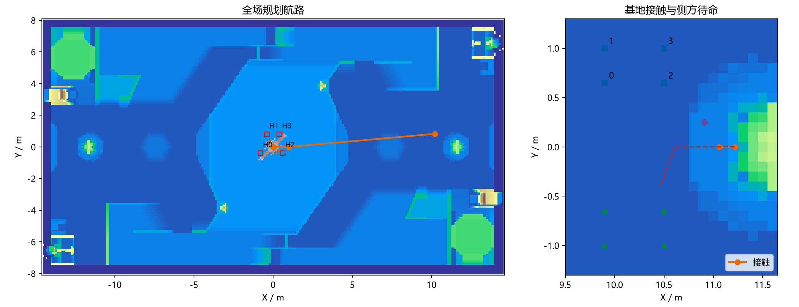
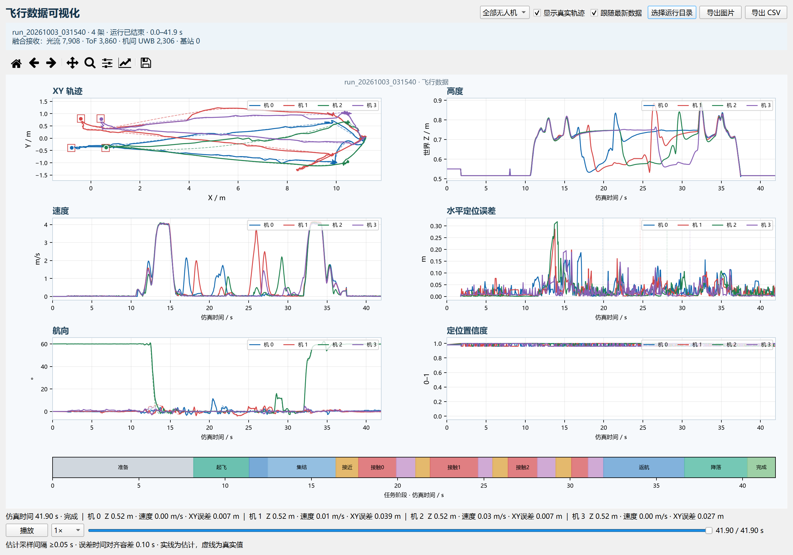

中央起飞点
起点位于能量机关下方，平台表面 z=0.5 m。每个红框边长 0.30 m、线宽 0.012 m；红框用于标记，不产生碰撞。
| 机号 | X / m | Y / m | 生成高度 Z / m |
|---|---|---|---|
| H0 | −0.8 | −0.4 | 0.55 |
| H1 | −0.4 | 0.8 | 0.55 |
| H2 | 0.6 | −0.4 | 0.55 |
| H3 | 0.4 | 0.8 | 0.55 |
机体静置后中心高度约 0.516 m。界面和 Gazebo 红框均读取 spawns，返航控制也使用这组坐标。

移动装甲板场景使用原基地顶部滑轨板件，见原模型结构与验证状态。下方快速任务数据为固定表面历史配置。
默认四机配置以 30 s 内完成起飞、依次接触基地、共同返航和落地确认为目标。飞行计时从第一架离开平台 3 cm 开始，到全队落地确认结束；环境启动和飞控初始化另计。
| 参数 | 设置 |
|---|---|
| 航行速度上限 | 4.0 m/s |
| 接触速度 | 0.25 m/s |
| 巡航／接触高度 | 0.75／0.58 m，世界坐标 |
| 稳定确认时间 | 0.05 s |
| 基地通行 | 上侧待命、下侧退出；下一架提前侧方就位 |
任务时间与飞机数量、场地航路和传感器质量有关。配置位于地图 JSON 的 team_mission；飞控响应参数位于 px4_parameters。光流启用时，PX4 同时融合伴随端的位置和速度。
| 验证 | 离地→物理落地 | 离地→全队落地确认 | 四机真实接触 |
|---|---|---|---|
| 1 | 24.49 s | 27.18 s | 4 / 4 |
| 2 | 26.73 s | 29.50 s | 4 / 4 |
两次运行均完成解除武装，最终返航偏差为 1.2–3.1 cm。计时与接触记录：四机快速任务验证。
成品光流模块提供机体系水平速度，IMU 提供姿态和运动预测，ToF 对匹配可靠的场地结构进行漂移修正。UWB 机间距离与方位把可信参考传递给其他飞机；参考携带来源、序号和传播路径，重复参考和环路被剔除。
无基站时使用已知起飞位置初始化共同坐标系。有基站时，根据固定坐标和测距融合；至少两条质量合格、方向独立的近期测距才能提供完整 XY 参考。高度由仿真环境直接提供。
光流有效率、定位置信度、ToF／UWB 融合计数和每机误差均可在实验台查看。接口字段见传感器接口与机群配置。
| 对象 | 尺寸或位置 |
|---|---|
| 比赛区 | 28 × 15 m，依据 RoboMaster 2026 规则手册第 4 节。 |
| 场地网格外包 | 29.15 × 16.05 m，包含周边结构；网格缩放为 1。 |
| 无人机物理模型 | 保护框碰撞外廓 104 × 104 × 32 mm；机体 80 × 60 × 25 mm；桨直径 32 mm；质量 180 g。 |
| 尺寸关系 | 前瞻手册 y=−0.001225x+0.3225，y 以 kg、x 以 mm 计。180 g 对应最大边长约 116.3 mm。 |
| 进攻方向 | 红方编队沿地图正 X 方向前往蓝方基地；基地中心约 (11.6, 0) m。 |
| 接触目标 | 基地正面下部表面约 (11.2174, 0, 0.58) m；接近点 (11.06, 0, 0.58) m。 |
场地采用 Sentry26 的 RMUC 2026 网格。基地和能量机关的位置对照官方场地俯视图，接触表面由同一网格的射线相交计算确定。
起点位于能量机关下方，平台表面 z=0.5 m。每个红框边长 0.30 m、线宽 0.012 m；红框用于标记，不产生碰撞。
| 机号 | X / m | Y / m | 生成高度 Z / m |
|---|---|---|---|
| H0 | −0.8 | −0.4 | 0.55 |
| H1 | −0.4 | 0.8 | 0.55 |
| H2 | 0.6 | −0.4 | 0.55 |
| H3 | 0.4 | 0.8 | 0.55 |
机体静置后中心高度约 0.516 m。界面和 Gazebo 红框均读取 spawns，返航控制也使用这组坐标。

接触确认同时检查冲击事件、接近距离和航向。单机数据中断时该机等待恢复，其余飞机继续执行；长期失联的飞机退出后续轮次，恢复及时则重新加入。默认不设阶段期限；可用 stage_timeout_s 设置主动返航期限。界面状态和日志写入失败会重试，错误计数写入运行状态。
点击实验台的“飞行数据曲线”，打开当前运行记录。窗口包含 XY 轨迹、高度、速度、水平定位误差、航向、置信度和任务阶段条。
曲线时间轴使用仿真时间，包含启动准备阶段。估计曲线按不小于 0.05 s 的间隔取样；水平误差使用时间戳对齐的真实位置，前后样本均在 0.10 s 内时线性插值。没有可匹配真实位置时留空。红色空框为起飞位置，虚线为真实轨迹。

uwb_anchors 中配置。切换任务或修改地图配置前先停止当前运行。
任务配置：simulation/maps/rmuc_2026_sentry26.json 中的 spawns、home_marker、team_mission。
运行目录包含 team_status.json、team_mission.jsonl、各机的 companion_ID.jsonl、truth_evaluation_only.jsonl 和 truth_evaluation_only_contacts.jsonl。
| 配置 | 物理仿真结果 | 定位与返航 |
|---|---|---|
| 1 架，无基站 | 完成基地接触、返航和落地 | XY 均方根误差 2.7 cm；返航偏差 2.0 cm |
| 4 架，无基站 | 按机号依次接触基地，共同返航并解除武装 | 各机 XY 均方根误差 1.8–2.7 cm；返航偏差 0.8、5.6、12.4、3.1 cm |
| 6 架，4 个固定基站 | 60 s 起飞与编队航行；六机均融合光流、ToF、机间 UWB 和基站测距 | 各机 XY 均方根误差 2.4–2.8 cm |
以上为 Gazebo/PX4 仿真测量；RV 程序已交叉编译，板上时延和实体传感器接入需在连接硬件后测量。